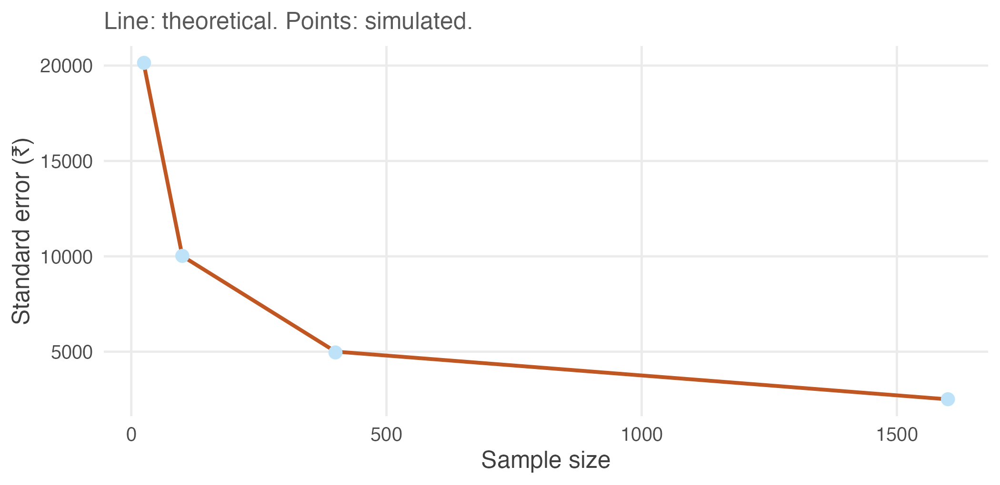
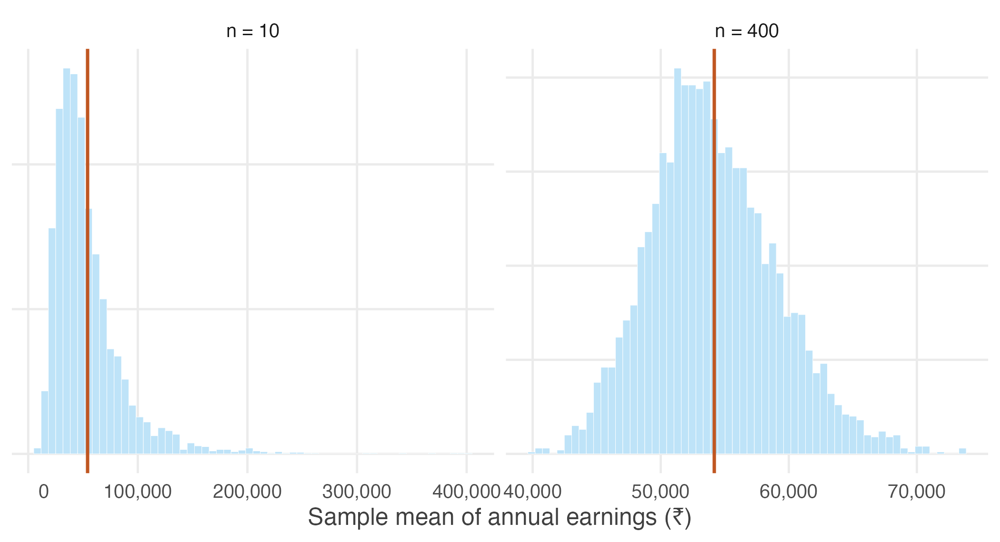

2.9 Practice problems
These are for learning. Work each one before opening the solution; the answer is worth very little if you have not first tried to produce it yourself.
The question bank that follows is for testing yourself and has no answers at all.
Several problems treat data/wages-india-synthetic.csv as a population of
20,000 wage earners. This is artificial, and deliberately so — it is the same
device as the deck of cards, at realistic Indian magnitudes. The dataset is
simulated but calibrated to IHDS-II estimates, so the returns to schooling and
the urban premium in it are close to the real ones.
Concept checks
Short questions. A sentence or two is enough.
2.1 A survey of 800 households reports mean monthly income of ₹18,400. Which part of that sentence is the estimator, and which is the estimate?
The estimator is the sample mean — the rule “add the 800 incomes and divide by 800.” The estimate is ₹18,400, the number that rule returned from this particular sample.
The estimator exists before any data are collected. The estimate exists only afterwards.
2.2 Why can a statistician never check whether a particular estimate is close to the truth?
Because checking would require knowing the population mean, and if the population mean were known there would have been no reason to conduct the survey. The truth is precisely what the estimate is trying to discover.
This is why the subject evaluates procedures rather than results.
2.3 Consider the estimator “ignore the data entirely and always report ₹50,000.” Is it unbiased? What is its standard error?
Its standard error is zero — it returns the same number from every possible sample, so it does not vary at all.
It is unbiased if and only if the population mean happens to be exactly ₹50,000, which we have no way of knowing. In general it is biased by whatever amount \(\mu\) differs from ₹50,000.
The problem is worth doing because it separates the two properties completely. Perfect precision is compatible with being arbitrarily wrong, and a small standard error is therefore no evidence that an estimate is any good.
2.4 In Section 2.2, Survey B produced estimates with a smaller spread than Survey A. Why is that alarming rather than reassuring?
Because the small spread came from surveying households that resemble one another, not from surveying more of India. The estimates agreed closely with each other while agreeing on a number ₹6,800 above the truth.
A researcher who saw only their own survey would observe a tight, well-behaved sample and conclude that the estimate was reliable. Spread measures agreement among samples drawn the same way; it says nothing about whether that way was the right one.
2.5 A report states: “mean earnings were ₹54,000 with a standard error of ₹10,000, so the true figure is within ₹10,000 of our estimate.” What is wrong with the second half of that sentence?
The standard error is not the distance between the estimate and the truth. That distance is unknowable, since the truth is unobserved.
The standard error describes the procedure: it says that repeating this survey would produce sample means with a standard deviation of about ₹10,000. Any particular estimate may lie much closer to \(\mu\) than that, or much further from it.
Explain
A paragraph each.
2.6 Explain why unbiasedness alone is not a good enough reason to use an estimator. Give an example of an unbiased estimator nobody would use.
Unbiasedness says the estimator is right on average across repeated samples. It says nothing about how far any single sample strays, and a rule can be centred correctly while being wildly variable.
The clearest example is “use the first observation and ignore the rest.” Since \(E(X_1) = \mu\), it is exactly unbiased. It is also useless, because its standard error is \(\sigma\) regardless of sample size. Collecting a million households does not improve it by any amount at all.
Usefulness requires a second property: the spread must fall as the sample grows. Unbiasedness places the distribution correctly; the variance is what makes the placement worth anything.
2.7 An interviewer travels to six villages and surveys thirty households in each. Which i.i.d. assumption is threatened, which of the two derivations in this unit stops working, and what happens to the results?
Independence is threatened. Households in a village share a labour market, a cropping pattern, and often an occupation, so once the first few are surveyed the rest carry much less new information.
The derivation that fails is the variance one. Its third line replaces \(\mathrm{Var}(X_1 + \cdots + X_n)\) with \(\sigma^2 + \cdots + \sigma^2\), and that step requires independence. Nothing goes wrong with \(E(\bar{X}) = \mu\), whose third line uses only identical distribution.
So the estimates remain centred on the population mean — the design is not biased — but they vary far more from survey to survey than \(\sigma/\sqrt{n}\) predicts. A researcher who applied that formula would report a precision the data does not contain. In Survey C the true spread was more than three times the formula’s claim.
2.8 Explain why the Law of Large Numbers needs both properties of the sample mean. Describe what would go wrong if each were missing in turn.
The Law of Large Numbers says large samples are increasingly likely to produce averages close to \(\mu\). That requires the sampling distribution both to sit in the right place and to narrow.
Without shrinking variance, the estimator stays centred but never improves. “Use the first observation” is centred on \(\mu\) forever and never gets closer to it, so no sample size makes it likely to land near the truth.
Without correct centring, shrinking variance actively makes matters worse. The estimator becomes reliably wrong — it converges with increasing confidence on the incorrect value, and every extra observation hardens the error rather than exposing it. The urban-only survey is exactly this case: ten thousand urban households would have produced a tighter cluster around a number still ₹6,800 too high.
Numerical problems
Pen and paper. Calculators are fine; R is not needed until the next section.
2.9 In the population of wage earners used below, annual earnings have standard deviation \(\sigma = ₹100{,}141\).
- Find the standard error of the sample mean for \(n = 100\), \(n = 400\) and \(n = 2{,}500\).
- How large a sample is needed for the standard error to fall below ₹5,000?
- A colleague proposes to improve an \(n = 400\) survey by adding 100 households. By how much does the standard error fall?
(i) \(\mathrm{se} = \sigma/\sqrt{n}\):
\[\begin{aligned} n = 100:&\quad \frac{100{,}141}{10} = ₹10{,}014 \\[4pt] n = 400:&\quad \frac{100{,}141}{20} = ₹5{,}007 \\[4pt] n = 2{,}500:&\quad \frac{100{,}141}{50} = ₹2{,}003 \end{aligned}\]
(ii) Require \(100{,}141/\sqrt{n} < 5{,}000\), so \(\sqrt{n} > 20.03\) and \(n > 401.1\). A sample of 402 suffices.
(iii) At \(n = 500\) the standard error is \(100{,}141/\sqrt{500} = ₹4{,}479\), down from ₹5,007 — a fall of about ₹528, or roughly 11%, for 25% more fieldwork. The returns are already thin at this sample size.
2.10 A researcher with \(n\) observations proposes the estimator \(T = \tfrac{1}{2}(X_1 + X_n)\): average the first and last household only.
- Show that \(T\) is unbiased.
- Find \(\mathrm{Var}(T)\).
- Using \(\sigma = ₹100{,}141\), compare the standard error of \(T\) with that of the sample mean of all 100 observations.
- What does this show about unbiasedness?
(i) \(E(T) = \tfrac{1}{2}\big(E(X_1) + E(X_n)\big) = \tfrac{1}{2}(\mu + \mu) = \mu\). Both observations are drawn from the same population, so each has expectation \(\mu\).
(ii) Using \(\mathrm{Var}(aX) = a^2\mathrm{Var}(X)\) and independence,
\[\mathrm{Var}(T) = \tfrac{1}{4}\big(\sigma^2 + \sigma^2\big) = \frac{\sigma^2}{2}\]
which is \(\sigma^2/n\) with \(n = 2\) — unsurprising, since \(T\) is the sample mean of two observations.
(iii) \(\mathrm{se}(T) = 100{,}141/\sqrt{2} = ₹70{,}810\), against \(100{,}141/10 = ₹10{,}014\) for the full sample mean. \(T\) is about seven times more variable.
(iv) That unbiasedness is a low bar. \(T\) is exactly as unbiased as \(\bar{X}\) and vastly worse, because it discards 98 of the 100 observations collected. Choosing between unbiased estimators is decided on variance.
2.11 A survey costs ₹900 per household in fieldwork. The current design surveys 400 households.
- What does the current survey cost?
- What would it cost to halve the standard error?
- The funder instead offers to double the budget. By what factor does the standard error fall?
(i) \(400 \times ₹900 = ₹360{,}000\).
(ii) Halving the standard error requires four times the sample, so 1,600 households at a cost of ₹1,440,000 — an extra ₹1,080,000 to buy one factor of two.
(iii) Doubling the budget buys 800 households. The standard error falls by a factor of \(\sqrt{2} \approx 1.41\), a reduction of about 29%.
Twice the money does not buy twice the precision, and this gets worse the larger the survey already is. It is often a better use of the second ₹360,000 to improve coverage of hard-to-reach households than to double the sample — because the errors that arise from missing those households are not reduced by sample size at all.
R exercises
2.12 Treat data/wages-india-synthetic.csv as a population of 20,000 wage
earners. Compute its true mean and standard deviation. Then draw 2,000 samples
of 100 workers each, and check both properties of the sample mean against
theory.
wages <- read.csv("data/wages-india-synthetic.csv")
earn <- wages$annual_earnings
mu_pop <- mean(earn)
sigma_pop <- sd(earn)
set.seed(3)
sim <- replicate(2000, mean(sample(earn, 100, replace = TRUE)))
round(c(population_mean = mu_pop,
centre_of_estimates = mean(sim),
theoretical_se = sigma_pop / sqrt(100),
observed_se = sd(sim)))#> population_mean centre_of_estimates theoretical_se observed_se
#> 54181 54072 10014 9939The estimates are centred on the population mean, and their spread is close to \(\sigma/\sqrt{n}\). Both properties hold.
This population is severely right-skewed — its mean is 54,181 against a median of 24,220 — yet neither property needed the population to be well behaved. Unbiasedness followed from each observation having expectation \(\mu\), and the variance result from independence. Shape never entered either derivation.
2.13 Repeat the previous exercise sampling only from urban workers, as an interviewer working exclusively in cities would. Report the centre and spread, and say which assumption has been broken.
urban_earn <- earn[wages$residence == "Urban"]
set.seed(3)
sim_urban <- replicate(2000, mean(sample(urban_earn, 100, replace = TRUE)))
round(c(population_mean = mu_pop,
centre_of_estimates = mean(sim_urban),
observed_se = sd(sim_urban)))#> population_mean centre_of_estimates observed_se
#> 54181 101270 15099The estimates are centred near ₹102,000 against a true population mean of about ₹54,000 — almost double. The assumption broken is identically distributed: urban workers are drawn from a different distribution than Indian wage earners as a whole, so the \(\mu\) appearing in the third line of the \(E(\bar{X})\) derivation is the urban mean, not the national one.
Note also that no amount of extra data would help. The estimator is converging efficiently on the wrong number.
2.14 Draw 2,000 sample means for \(n = 25, 100, 400\) and \(1{,}600\) from the same population, and plot the observed standard error against the theoretical \(\sigma/\sqrt{n}\). Does the \(1/\sqrt{n}\) rule hold?
set.seed(3)
ns <- c(25, 100, 400, 1600)
se_tab <- data.frame(
n = ns,
observed = sapply(ns, function(n) sd(replicate(4000, mean(sample(earn, n, replace = TRUE))))),
theory = sigma_pop / sqrt(ns)
)
round(se_tab)#> n observed theory
#> 1 25 20143 20028
#> 2 100 10024 10014
#> 3 400 4961 5007
#> 4 1600 2510 2504ggplot(se_tab, aes(n)) +
geom_line(aes(y = theory), colour = book_palette$reject, linewidth = 0.9) +
geom_point(aes(y = observed), size = 2.6, colour = book_palette$fill) +
labs(x = "Sample size", y = "Standard error (₹)",
subtitle = "Line: theoretical. Points: simulated.") +
theme_book()
Figure 2.5: Observed and theoretical standard errors for growing sample sizes.
The points sit on the curve at every sample size, agreeing with theory to within about one per cent. Quadrupling \(n\) halves the standard error each time, exactly as \(1/\sqrt{n}\) requires.
Note the replace = TRUE, which matters more here than it did with the deck.
Drop it and the observed spread at \(n = 1{,}600\) comes out roughly five per
cent below theory, because 1,600 is eight per cent of this population of
20,000 — sample a substantial fraction of a finite population without
replacement and the draws are no longer independent, so \(\sigma/\sqrt{n}\)
stops being right. Real surveys of India are nowhere near this fraction, which
is why the assumption is harmless in practice and not in a simulation.
2.15 Do the two properties depend on the population being well behaved? Compare the sampling distribution of the mean at \(n = 10\) and \(n = 400\) for this heavily skewed earnings population, and comment on what changes and what does not.
set.seed(3)
sk <- do.call(rbind, lapply(c(10, 400), function(n)
data.frame(n = factor(paste("n =", n), levels = c("n = 10", "n = 400")),
m = replicate(4000, mean(sample(earn, n, replace = TRUE))))))
ggplot(sk, aes(m)) +
geom_histogram(bins = 60, fill = book_palette$fill, colour = "white",
linewidth = 0.1) +
geom_vline(xintercept = mu_pop, colour = book_palette$reject,
linewidth = 0.8) +
facet_wrap(~ n, scales = "free") +
scale_x_continuous(labels = function(x) format(x, big.mark = ",")) +
labs(x = "Sample mean of annual earnings (₹)", y = NULL) +
theme_book() +
theme(axis.text.y = element_blank())
Figure 2.6: Sampling distribution of mean earnings at two sample sizes. The red line is the population mean.
Both panels are centred on the population mean. Unbiasedness holds at \(n = 10\) just as at \(n = 400\), and it required nothing of the population’s shape — the derivation used only that each observation has expectation \(\mu\).
What changes is the shape. At \(n = 10\) the sampling distribution inherits the population’s long right tail and is clearly skewed. At \(n = 400\) it is close to symmetric. That is the Central Limit Theorem from Section 1.6 at work, and it is a reminder that “large enough” depends on the population: for earnings data, \(n = 30\) would not have been remotely sufficient.
2.16 Using the same population, compare three estimators of \(\mu\) across 2,000 samples of 50: the sample mean, the sample median, and the midpoint of the smallest and largest observations. Which would you use, and why?
set.seed(3)
midrange <- function(x) (min(x) + max(x)) / 2
comp <- replicate(2000, {
s <- sample(earn, 50, replace = TRUE)
c(mean = mean(s), median = median(s), midrange = midrange(s))
})
round(cbind(centre = rowMeans(comp),
bias = rowMeans(comp) - mu_pop,
spread = apply(comp, 1, sd)))#> centre bias spread
#> mean 53896 -285 14550
#> median 24653 -29528 5399
#> midrange 250648 196467 172624Only the sample mean is centred on \(\mu\). The median sits far below it, because this population is strongly right-skewed and the median estimates the population median, not the mean — it is an excellent estimator of a different parameter. The midrange is wildly variable, since it depends entirely on the two most extreme observations drawn and discards the other 48.
The sample mean is the only one of the three that is unbiased for \(\mu\) and tightens dependably as the sample grows.
Worth noting, though: if the question of interest were “what does a typical wage earner make?”, the median would be the better summary. Choosing an estimator requires first being clear about which parameter you actually want.